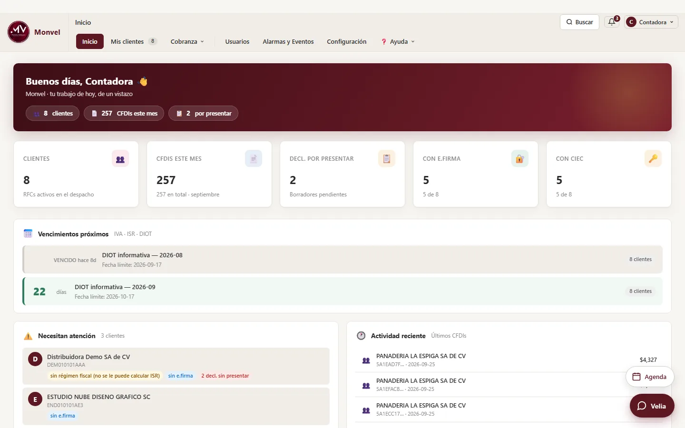
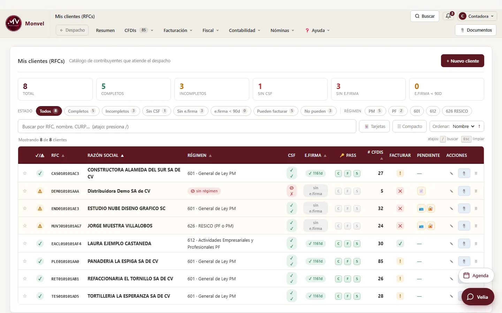
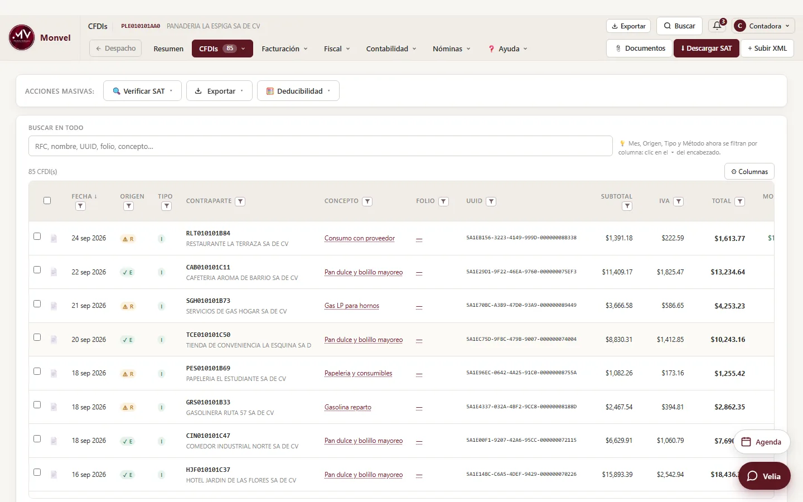
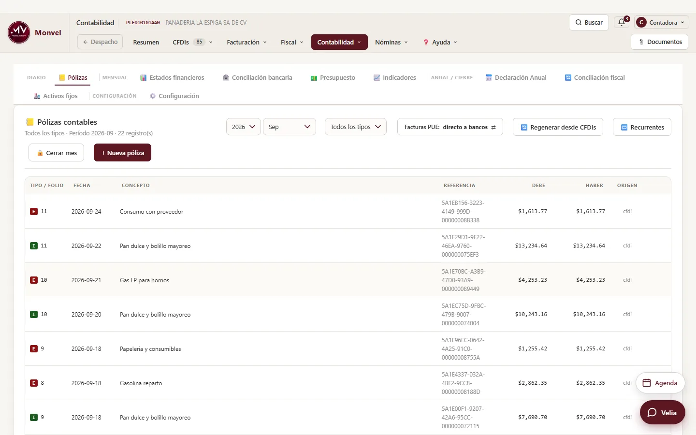
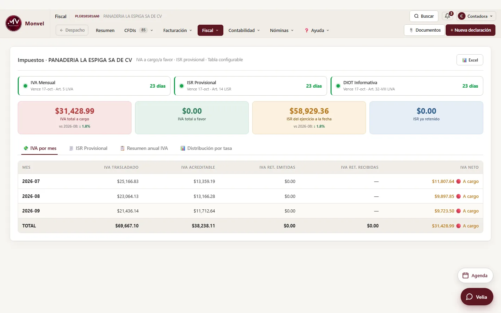
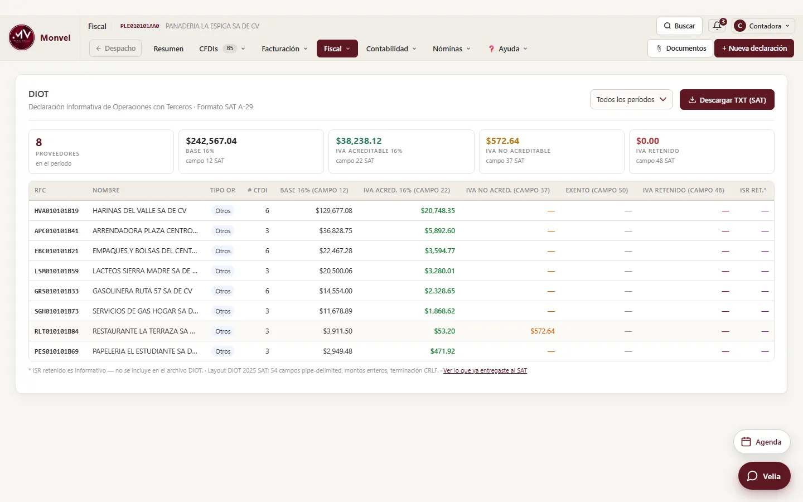
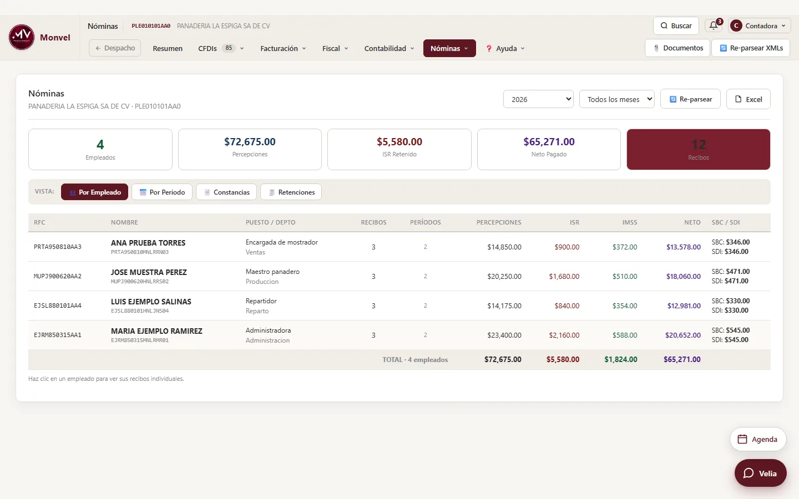
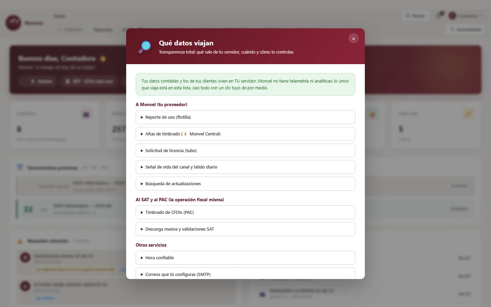

Conecta
Descarga masiva de CFDI emitidos, recibidos y de retenciones, con e.firma o CIEC. También la Constancia de Situación Fiscal y la Opinión 32-D.
Para despachos y contadores que llevan varios RFC. Descarga del SAT, facturación, contabilidad electrónica, nómina, conciliación bancaria y declaraciones en un solo sistema, instalado en un equipo de tu despacho: la contabilidad y la e.firma de tus clientes se quedan ahí.
Cada dato avanza al siguiente proceso. Lo que descargas del SAT alimenta la clasificación, las pólizas, la conciliación y la declaración. No hay que volver a capturarlo en otro lado. Y la unidad es el despacho, no la empresa: tus clientes son renglones dentro de él, no una licencia cada uno.
Descarga masiva de CFDI emitidos, recibidos y de retenciones, con e.firma o CIEC. También la Constancia de Situación Fiscal y la Opinión 32-D.
86 reglas de deducibilidad, cada una citada a su artículo de la LISR. Cuando fijas la cuenta contable de un proveedor, Monvel la recuerda y la reutiliza el mes siguiente.
Cruza los movimientos del banco contra CFDI y pólizas. Lo que enlazas a mano lo aprende, y si aprendió mal, puedes hacer que lo olvide.
IVA, ISR provisional y DIOT salen del mismo cálculo que ves en pantalla, en el Excel y en el reporte del mes. Tú presentas en el portal del SAT y guardas el acuse junto a la declaración.
Así se ve Monvel 1.0.29 con un despacho de ejemplo. Elige una pantalla.







Capturas tomadas de Monvel 1.0.29 con datos de ejemplo: los nombres, RFC e importes son ficticios.
El sistema corre en un equipo tuyo y se usa desde el navegador: en la oficina, desde tu casa o desde el celular. Los XML, las pólizas y las credenciales de tus clientes viven en ese equipo, no en la nube de un proveedor.
Monvel no le manda a nadie por qué pantallas andas ni qué capturas. Todo lo que sale de tu servidor está declarado en la pantalla «Qué datos viajan»: qué lleva, cuándo y cómo se controla. Entre ello, una señal diaria con puros números —la versión, cuántos avisos activos, cuántas facturas en cola, cuántos comprobantes se emitieron en el mes— para que tu proveedor se entere si algo se rompe. Nunca nombres, RFC ni importes, y se puede apagar.
La CIEC y la e.firma de tus clientes se guardan cifradas y viajan a los servicios del SAT, nunca a Monvel. La firma de una cancelación se calcula dentro de tu servidor: la llave privada no sale de ahí.
La lectura del estado de cuenta del banco se hace en tu propio servidor. No se manda a ningún servicio externo para interpretarla.
Una tarea programada respalda la base y los documentos todos los días, con la retención que tú indiques. Después, Monvel revisa el último respaldo: que abra completo, que traiga la base, los documentos y las llaves, y que no sea viejo. Si un documento quedó fuera, te dice de quién es y qué hacer.
La contracara honesta: si el equipo donde vive Monvel está apagado, nadie entra y no salen avisos. Es el precio de que la información sea tuya y esté donde tú la puedes ver. Cuando el equipo enciende, Monvel arranca solo como servicio de Windows, sin que nadie inicie sesión, y si el servicio se detiene se reinicia solo. Un vigilante revisa cada 15 minutos que el servicio, la base y el respaldo estén en orden, y avisa por correo si algo falla.

Monvel se publica seguido y cada versión llega sola a tu servidor, con sus notas en español. Lo más importante del mes, hasta la versión 1.0.29 del 24 de septiembre:
Monvel prueba la contraseña de la e.firma y del sello tal como la escribes —también con el espacio que pega WhatsApp o una ñ escrita en otra computadora— y te dice con cuál abrió. No hace falta cambiarle la contraseña a la llave.
El RFC y la CURP del certificado se toman cada uno de su lugar, así la descarga del SAT y el alta de un contribuyente persona física ya no se detienen con un falso «RFC distinto».
Si el nombre, el código postal o el régimen de la ficha no coinciden con la Constancia de Situación Fiscal, lo ves antes de que el SAT rechace la factura. Y si el sello es recién tramitado, te avisa que el SAT tarda hasta 72 horas en publicarlo.
En cada factura a crédito, «Administrar pagos» calcula la parcialidad, el saldo anterior y el saldo insoluto como el portal del SAT, y admite varios pagos en un mismo complemento.
Pantallas rediseñadas; dirección del receptor con el catálogo de Correos de México; plantillas y repetir una factura anterior; las 178 monedas del SAT con sus decimales, e IEPS y retenciones elegidos de la lista oficial.
La palomita de CSF, e.firma, CIEC o sello ya comprueba que el archivo exista y se pueda abrir. Si uno se perdió de vista, Monvel lo busca y lo vuelve a apuntar, siempre con tu confirmación.
Si el documento de algún contribuyente no entró al respaldo de la noche, o un archivo estaba abierto y no se pudo copiar, el aviso dice de quién es y qué hacer.
Un botón propone el mes con la declaración, el IVA, la DIOT y la balanza que le toca a cada cliente según su régimen. Después, cada persona recibe un solo aviso al día con lo vencido, lo de hoy y lo de mañana; si activas los avisos al celular, te llegan aunque no tengas Monvel abierto.
Si preguntas «¿y esto por qué no cuadra?» mientras ves la conciliación de agosto, entiende de qué hablas. Sólo ve el nombre de la pantalla y el periodo elegido, nada de lo que hay en ella.
Cada versión trae dentro de Monvel sus notas completas: qué cambió y qué te toca revisar.
No es un facturador con contabilidad pegada: comprobantes, contabilidad completa con su Anexo 24 y nómina pesan lo mismo dentro del sistema.
Descarga masiva, Constancia de Situación Fiscal, Opinión 32-D, facturación CFDI 4.0 una por una o en lote, notas de crédito, cancelación y complemento de pago con sus saldos calculados.
Pólizas manuales, automáticas desde los CFDI y recurrentes; catálogo de cuentas, auxiliar, balanza, balance, estado de resultados comparativo, activos fijos y cierre de mes.
Declaración mensual y anual de persona física y moral, IVA, ISR provisional, DIOT, conciliación contable-fiscal y comparador de regímenes.
Recibos CFDI de nómina con ISR y subsidio según las tarifas del Anexo 8 para su periodicidad, catálogo de empleados, retenciones del mes, constancia de sueldos y su póliza contable.
Carga el estado de cuenta en CSV, Excel o PDF y cruza los movimientos contra CFDI y pólizas, con pagos parciales y un pago contra varias facturas.
Agenda con las obligaciones de cada cliente, tablero por cliente, cobranza de tus honorarios, usuarios con permisos por cliente y bitácora de quién hizo qué.
Un sistema que se equivoca en silencio es peor que uno que no hace la tarea: el error aparece meses después, ya declarado. Éstas son reglas escritas dentro del producto.
Antes de enviarla revisa el código postal del receptor, su régimen fiscal, que ese régimen corresponda a su tipo de RFC, que cada impuesto exista en el catálogo del SAT y que tu sello esté vigente. Si algo no cuadra, te dice qué dato es y dónde se corrige.
Lo recién timbrado queda como «Por confirmar» hasta que el SAT lo reporta. Si pasadas 72 horas sigue sin aparecer, se marca «No encontrado», sale de los cálculos y te avisa.
Lo leído se compara contra los totales que el propio estado de cuenta imprime: saldo anterior, depósitos, retiros y saldo al corte. Si no coincide, se detiene. No deja cifras malas adentro con una advertencia en amarillo.
Son archivos parecidos y el SAT no acepta la e.firma para timbrar. Monvel lo detecta leyendo el certificado, no el nombre del archivo, y te dice cuál va en cada lugar.
Lo que timbraste mientras aprendías no se borra —queda como historial— pero no suma en la declaración, ni en la DIOT, ni en las pólizas, ni en la antigüedad de saldos.
Velia contesta sobre los clientes que ya tienes cargados: cuánto facturó uno en el mes, qué sellos y e.firmas están por vencer, qué proveedores aparecen en la lista 69-B, qué avisos siguen abiertos. Sabe qué es un complemento de pago y en qué se diferencian el sello y la e.firma. Siempre dice de qué periodo es la cifra, avisa cuando algo no le cuadra y contesta que no puede cuando le pides algo que no hace. Consulta tu información; no la modifica.
Viene en los tres planes, con su cuota mensual de consultas: 75, 150 o 250. La cuota se renueva el día 1.
Velia es opcional y es el único lugar del sistema donde lo que escribes va a un servicio externo de inteligencia artificial. Viaja tu pregunta, la ficha del cliente que tengas abierto (RFC, nombre, tipo de persona y régimen) y el nombre de la pantalla con su periodo. No viaja tu base, ni tus XML, ni los clientes que no estés viendo. Si no la usas, no viaja nada.
Nada de esto se pide: corre solo, en el servidor de tu despacho, y sólo te habla cuando encuentra algo.
No te pedimos que confíes: esto es lo que se hace con cada versión antes de publicarla. La 1.0.29, publicada el 24 de septiembre, pasó 202 de 202 baterías de pruebas.
Levantan Monvel con datos de prueba y revisan cálculos fiscales, pólizas, nómina, conciliación y pantallas. Si una sola sale en rojo, la versión no se compila.
Se timbra un comprobante de verdad —y se cancela— para comprobar que el timbrado funciona con el SAT, no sólo en pruebas.
Verifica la firma del paquete, respalda la base y se actualiza de madrugada si nadie está trabajando. Si prefieres hacerlo tú, es un botón, y el modo automático se apaga cuando quieras.
Cada una con sus notas en español: qué cambió y qué te toca revisar, sin jerga.
Además de las pruebas, el paquete se verifica pieza por pieza y se arranca en una instalación limpia antes de publicarse.
Importadores para CONTPAQi, CONTPAQi Nóminas, Aspel COI, Aspel NOI y archivos de Excel o CSV: catálogo de cuentas, saldos iniciales, pólizas, clientes y empleados. Si una columna no se reconoce, Monvel te pregunta a qué campo corresponde. Antes de aplicar ves un resumen y eliges si se fusiona o se reemplaza; una póliza que no cuadra no entra, sin descartar las demás del archivo. Los comprobantes se vuelven a descargar del SAT.
Dejamos el servidor listo: base de datos, respaldo diario, correo de avisos y acceso desde fuera de la oficina. El instalador tarda de 10 a 20 minutos según tu internet. Tú y tu equipo entran desde el navegador, sin instalar nada en cada computadora, y también desde el celular agregando Monvel a la pantalla de inicio.
Cada forma de trabajar tiene su precio. Ésta es la diferencia, incluido lo que Monvel te pide a cambio.
| Qué comparar | Sistema en la nube | Programa de escritorio | Monvel |
|---|---|---|---|
| Dónde vive la información | En los servidores del proveedor. | En cada computadora donde se instala. | En un equipo de tu despacho; tu equipo entra desde el navegador. |
| Cómo se cobra | Suele cobrarse por empresa o por usuario. | Suele cobrarse por empresa, por módulo o por equipo. | Una cuota por despacho según cuántos RFC llevas. Los usuarios no se cobran. |
| Si se va el internet | No se puede entrar. | Se sigue trabajando en esa computadora. | Se sigue usando en la red de la oficina; descargar del SAT y timbrar esperan a que vuelva. |
| Si se apaga el equipo | No depende de ti. | Se detiene esa computadora. | Nadie entra hasta que el equipo encienda; al encender, Monvel arranca solo. |
| Respaldos | Los hace el proveedor, donde él decide. | Los configuras en cada computadora. | Diarios, revisados por Monvel, en la carpeta que tú elijas. |
| Actualizaciones | Las aplica el proveedor. | Se instalan en cada computadora. | Llegan solas de madrugada, firmadas y con respaldo previo. |
| Lo que necesitas | Internet en todo momento. | Una licencia por equipo o por empresa. | Un equipo con Windows 10 u 11 que quede encendido en tu despacho. |
La descripción de la nube y del escritorio es general: cada producto tiene sus condiciones. Lo que dice la columna de Monvel es lo que hace la versión 1.0.29.
La lista larga, sin letra chiquita. Todo lo de aquí abajo está hoy en el producto y entra en cualquier plan: lo que cambia entre planes es cuántos RFC llevas, cuántos timbres traes al mes y cuántas consultas a Velia.
¿No encuentras el tuyo? Escríbenos y te decimos si Monvel lo hace hoy, o si no lo hace, también.
Sin módulos que se cobran aparte y sin cobro por usuario: da de alta a todo tu equipo en cualquier plan. El timbrado va incluido y la instalación la hacemos nosotros.
MXN al mes · 10 RFC · usuarios sin límite
o $2,990 al año: 2 meses sin costo
MXN al mes · 30 RFC · usuarios sin límite
o $5,990 al año: 2 meses sin costo
MXN al mes · RFC y usuarios sin límite
o $9,990 al año: 2 meses sin costo
Precios en pesos mexicanos, IVA no incluido. Los timbres sirven igual para facturas, complementos de pago y recibos de nómina. Si se te acaban, tu facturación sigue: los adicionales se cuentan y se cobran aparte, y Monvel te avisa al llegar al 80 % y al 100 % de tu cuota; como freno de seguridad hay un tope del triple de la cuota mensual, que se amplía con una bolsa de timbres. Las consultas a Velia se renuevan el día 1 de cada mes.
Respuestas directas sobre dónde viven los datos, qué pasa si algo falla, la instalación, la migración, el timbrado y la nómina.
Tu contabilidad no: los XML, las pólizas, los estados financieros y las credenciales viven en el equipo donde se instala Monvel, que es tuyo. Lo que sí sale está declarado dentro del sistema, en Configuración → «Qué datos viajan»: cada factura que timbras va al proveedor de certificación, que es como funciona el timbrado ante el SAT; la descarga y las consultas van directo al SAT; y a Monvel sólo llegan el RFC y la razón social de los clientes que das de alta para timbrar, más una señal diaria con puros números que puedes apagar. Si usas a Velia, viaja lo que le escribes y la ficha del cliente que tengas abierto.
Mientras el equipo esté apagado nadie entra y no salen avisos: es la contraparte de que la información sea tuya. Al encender, Monvel arranca solo como servicio de Windows, sin que nadie inicie sesión, y si el servicio se detiene se reinicia solo. El respaldo diario se guarda en la carpeta que tú elijas y Monvel lo revisa cada día; además, un vigilante revisa cada 15 minutos que el servicio, la base de datos y el respaldo estén en orden, y avisa por correo si algo falla.
Un equipo con Windows 10 (versión 2004 o posterior) u 11 que quede encendido en tu despacho y unos 2.5 GB libres. El instalador tarda de 10 a 20 minutos según tu conexión a internet. La instalación la hacemos nosotros y dejamos listos el respaldo diario, el correo de avisos y el acceso desde fuera de la oficina. En las demás computadoras no se instala nada: se entra desde el navegador.
Das de alta a cada cliente con su RFC; al subir su certificado, Monvel lee sus datos y coteja la ficha contra su Constancia. Lo que ya llevas en CONTPAQi, CONTPAQi Nóminas, Aspel COI, Aspel NOI o en Excel entra con los importadores —catálogo de cuentas, saldos iniciales, pólizas, clientes y empleados—, siempre con un resumen antes de aplicar. Los comprobantes se vuelven a descargar del SAT.
Sí. La facturación en lote toma los renglones de un Excel o CSV, reusa los datos fiscales que ya tienes en tu libreta de receptores y te deja revisar y ajustar cada renglón en pantalla antes de timbrar. Además hay facturas recurrentes, plantillas y un botón para repetir una factura anterior con el mismo receptor y los mismos conceptos; el folio, la fecha y los sellos nunca se copian.
Sí: recibos CFDI de nómina con ISR y subsidio según las tarifas del Anexo 8 de su periodicidad —semanal, decenal, quincenal o mensual—, catálogo de empleados, retenciones del mes, constancia de sueldos y la póliza contable. Los timbres de tu plan sirven igual para facturas y para recibos.
Sí. Cada plan trae su cuota mensual de timbres y no necesitas contratar un proveedor aparte. El alta de cada uno de tus clientes ante el proveedor de timbrado se tramita sola en cuanto subes su sello; si el sello es nuevo, el SAT tarda hasta 72 horas en publicarlo y Monvel te dice desde qué día intentar. Si la cuota se acaba, tu facturación sigue: los adicionales se cobran aparte.
Básico admite 10 RFC, Profesional 30 y Despacho Plus no fija límite. Los usuarios no se cobran en ningún plan: da de alta a todo tu equipo, cada quien con su acceso, y puedes restringir a cada persona a los clientes que le tocan.
Monvel trae un modo práctica con una empresa ficticia ya cargada —con sus facturas, sus movimientos de banco y sus empleados— para que entrenes a quien haga falta en el ciclo completo sin tocar información real. Adentro hay además 25 recorridos guiados que van explicando cada pantalla mientras se usa.
Sí, de dos formas. El Aula Virtual es Monvel con un despacho de ejemplo ya cargado: se abre en el navegador, sin instalar y sin tarjeta, en una sesión de práctica de una hora. La facturación y Velia se ven en la demostración en vivo, con los casos de tu despacho.
Nosotros publicamos la versión y tu servidor la instala solo de madrugada, si nadie está trabajando, después de comprobar la firma del paquete y respaldar la base. También puedes hacerlo con un botón. Cada versión llega con sus notas en español; en septiembre salieron 16.
Una demostración en vivo, sin presentación de ventas: abrimos Monvel y recorremos el mes de un cliente como el tuyo: la descarga del SAT, la clasificación, la factura, las pólizas, la conciliación y la declaración. Si después quieres probarlo por tu cuenta, el Aula Virtual queda abierta.
El Aula Virtual es Monvel con un despacho de ejemplo ya cargado: comprobantes, pólizas, conciliación bancaria, nómina y declaraciones de los meses recientes. Se abre en el navegador, sin instalación, sin tarjeta y sin compromiso. Es un espacio de práctica compartido: no subas información real de tus clientes.
Entrar al Aula Virtual →